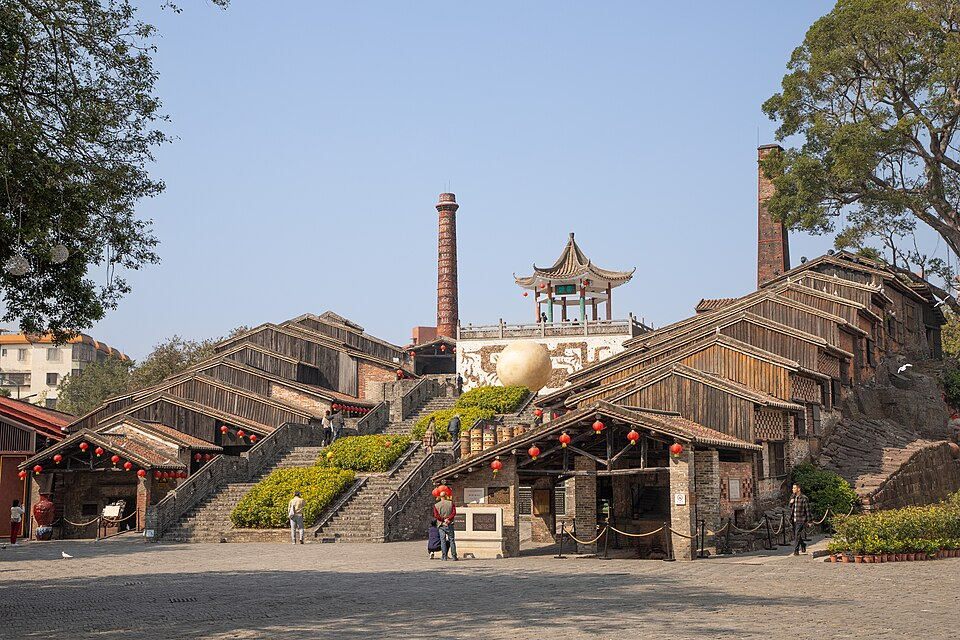
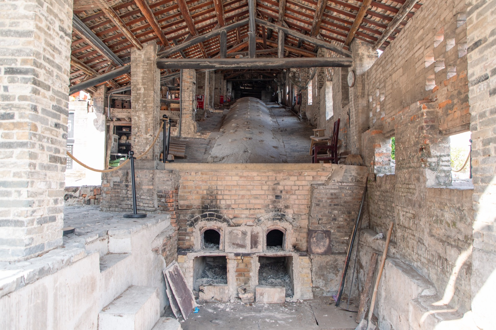
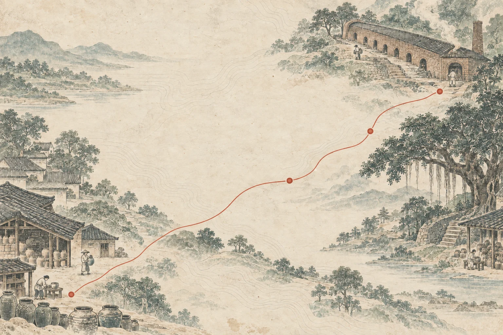
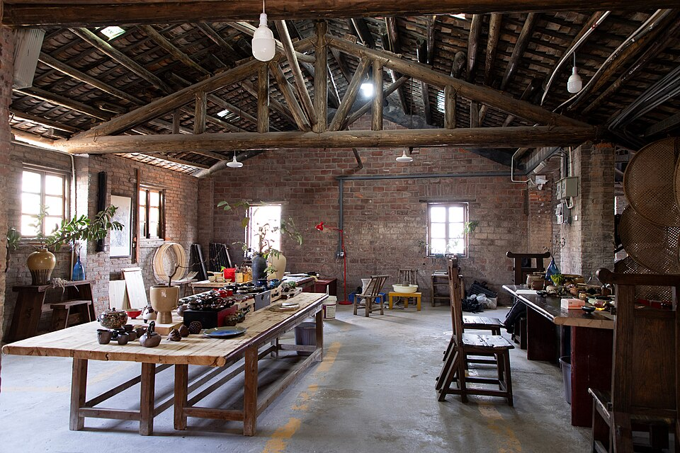
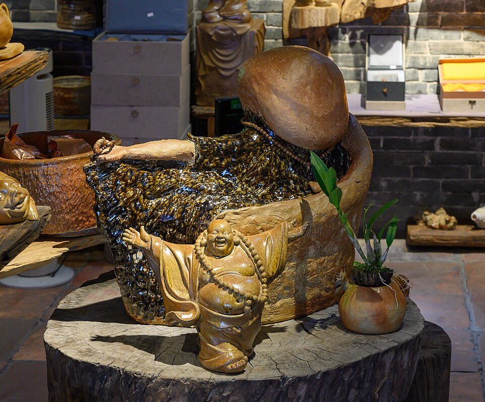
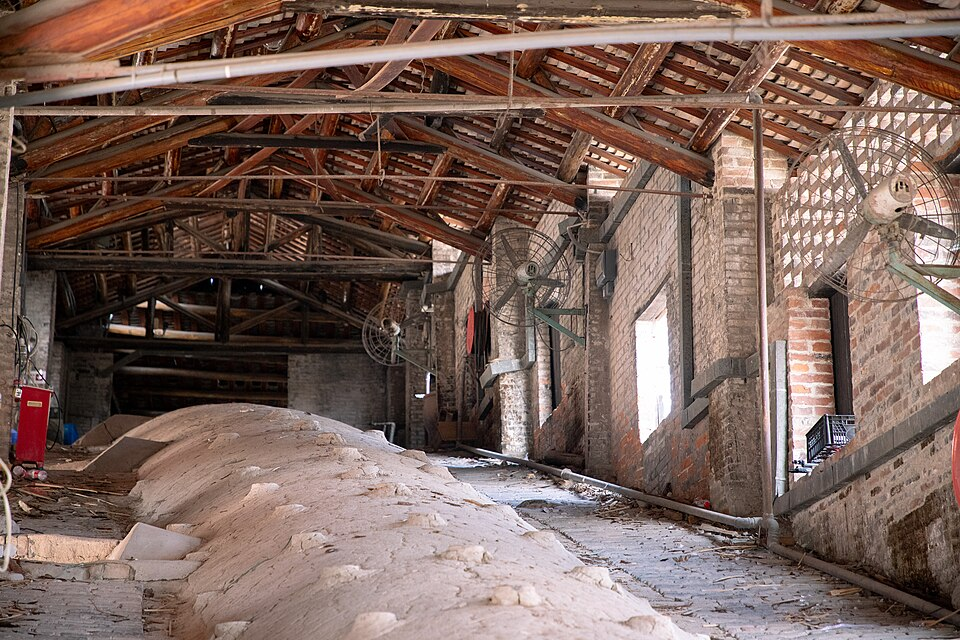

从明代开始，
窑火仍在继续。
南风古灶依坡而建。它不是被封存的旧窑，而是理解石湾陶业如何延续的一处现场。

龙窑剖面示意 · 非实测比例
沿坡而建，火候随窑内位置变化
示意图仅解释龙窑沿坡延伸的形态；不代表遗址测绘或现场导览图。
1506—1521
明代正德年间始建
2001
公布为全国重点文物保护单位
窑火留下的不止器物，也有石湾至今仍在延续的制陶生活。
窑与日常循着窑身，
走进石湾。
从仍在延续的龙窑开始，经过榕树、作坊与陶艺街巷。这里给你一条认识景区的叙事路线，实际开放情况请以现场公告为准。
游览顺序示意 · 非比例地图
01南风灶与高灶 02古灶榕风 03古寮场与陶艺空间 04艺术家村与陶片壁画 游览顺序示意 · 非比例地图-

龙窑内部↗ 01 / THE KILN南风灶与高灶
两座柴烧龙窑，是认识石湾陶业的起点。沿着窑身看窑门与火眼，想象陶器如何在长窑中经历火候变化。
从窑口，向坡上看。 -
古灶与榕树↗ 02 / THE BANYAN古灶榕风
窑旁古榕为景区留下另一种时间感。抬头看树冠，再回望依坡铺展的屋顶，窑与岭南街巷在这里相遇。
看树，也看窑的坡势。 -

陶艺工作空间↗ 03 / THE STUDIO古寮场与陶艺空间
古寮场保留制陶现场，适合从工具、泥料和半成品读懂工艺。景区也有石湾公仔制作过程与陶艺示范；现场体验项目及开放时间以当期安排为准。
先看工具，再看作品。 -
04 / THE VILLAGE
艺术家村与陶片壁画
明清古民居改造而成的艺术家村，让陶艺继续在街巷里生长。沿途留意《瑞龙献宝》：陶片不只在窑里，也成为城市记忆的一部分。
从老屋，走到新的表达。

石湾陶塑 · 手艺与生活
泥与人的手，
泥与人的手，
把日子烧出形状。
石湾陶塑从日用陶器发展而来。“石湾公仔”以传神、生动见长，也延伸到动物、器皿、微塑与建筑瓦脊装饰。
一抔泥土，在手上有了神情；入窑之后，又有了自己的颜色。
从构思，到入窑
石湾陶塑技艺 · 六个环节
- 01构思创作
- 02泥料炼制
- 03成形
- 04装饰
- 05上釉
- 06龙窑煅烧
不同位置的火候各有变化，最终的成色离不开陶艺师的经验。

南风古灶龙窑 · B站原视频窑火之外，
石湾仍在相聚。
制陶既是手艺，也是围绕着窑场形成的生活。谢灶祈福、龙窑开窑与陶艺市集等活动，会在特定时段举办。
活动不是每日固定演出；到访前请确认当期安排。
- 01谢灶祈福敬谢窑神，祈愿顺遂
- 02龙窑开窑等待烧成作品出窑
- 03陶艺市集创作者与来访者相遇
把一天留给石湾，
从窑火走到一件陶。
按自己的节奏走：先看窑，再逛作坊和艺术家村，最后挑一件真正喜欢的石湾作品。开放与体验信息请以景区当期公告为准。
- 看窑
- 逛古寮
- 看陶艺
- 选一件石湾公仔作手信